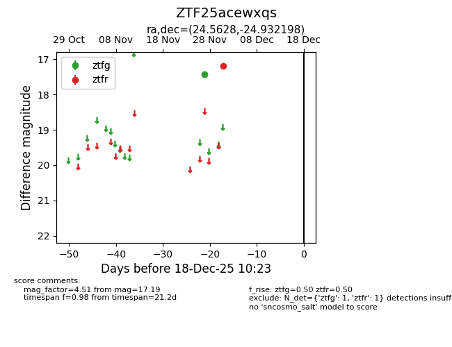
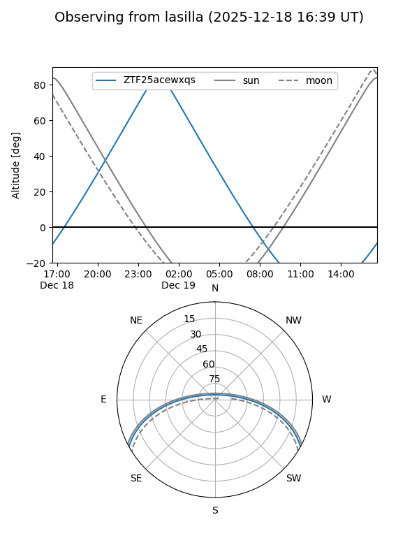
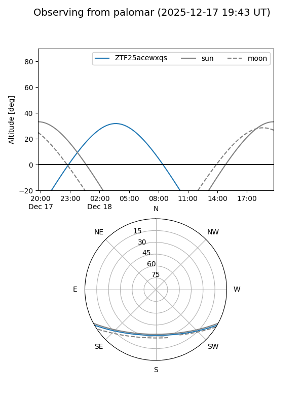

ZTF25acewxqs
Target ZTF25acewxqs at 2025-12-18 11:17
Aliases and brokers:
FINK: fink-portal.org/ZTF25acewxqs
Lasair: lasair-ztf.lsst.ac.uk/objects/ZTF25acewxqs
ALeRCE: alerce.online/object/ZTF25acewxqs
alt names
ZTF25acewxqs (ztf,fink_ztf)
Coordinates:
equatorial (ra, dec) = 24.5628,-24.93220
equatorial (HMS+DMS) = 01:38:15.06,-24:55:55.91
galactic (l, b) = (203.7528,-79.26156)
Photometry
last ztfg=17.44, ztfr=17.19
1 ztfg, 1 ztfr detections
Lightcurve

Visibility


Additional plots